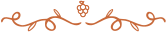

For Your Special Events
We have a great collection of exclusive reserve wines.
Learn moreWe have a great collection of exclusive reserve wines.
Learn moreOnly natural wine without all kinds of additives or flavors.
Learn moreWe produce and sell the finest wines made of the best grape varieties.
Learn moreWhat Makes Our Wines Special
We use only 100% natural grapes, no impurities.

We make wine from selected grapes of the best varieties.
In the production of wine, we use only natural ingredients.
Grapes for wine production are grown in an ecologically clean place.
We do not add alcohol or any additives to increase ABV.
Before bottling, the wine is aged in special oak barrels.
From Chardonnay to Syrah, we offer classic wines that everyone likes.